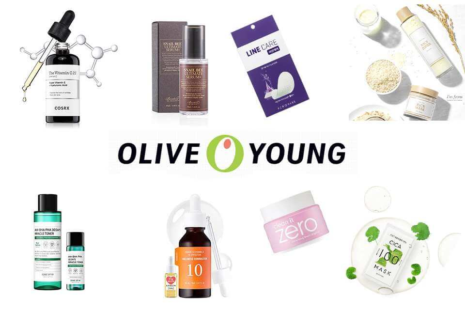

OLIVE YOUNG
WHO ARE WE ?
Olive Young is a health and beauty product store based in South Korea. Olive Young opened its first storfe in Sinsa-dong, Gangnam in December 1999 under the management of CJ systems and pineered Korea's health and beauty marke.As of 2017, it was number one within its market.
Olive Young's main slogan is "All live young with Olive Young" which reflects the main philosophy 'Natural Healthy' of Olive Young.
In 2021, Olive Young is solidifying its no.1 positionin the Korean H & B market, which was hit directly by Covid-19.
Major business
Self-developed products
- Cosmetics accessories: cotton swabs, nail clippers, hair combs.
- Beauty supplies: sunscreen, mask packs, nose packs.
General sales products
- Beauty Care: skin care, make-up , perfume , men's cosmeticss, beauty accessories.
OUR ITEMS:
